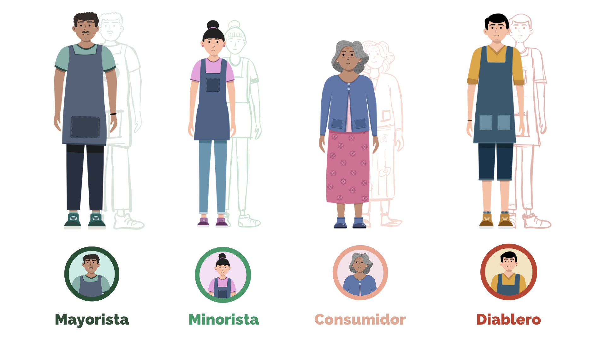
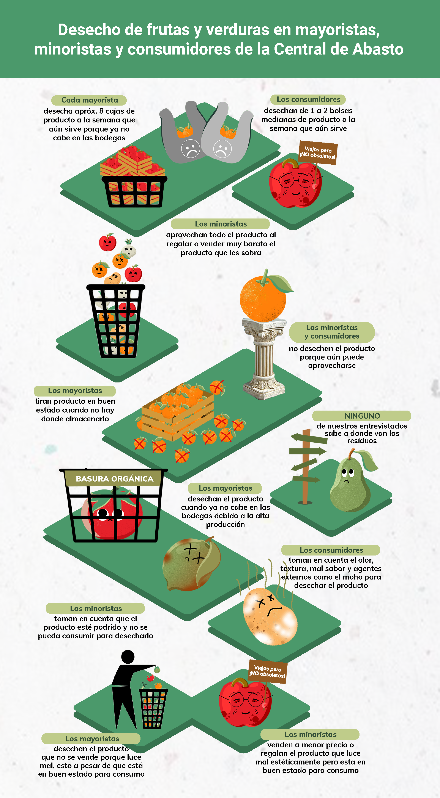
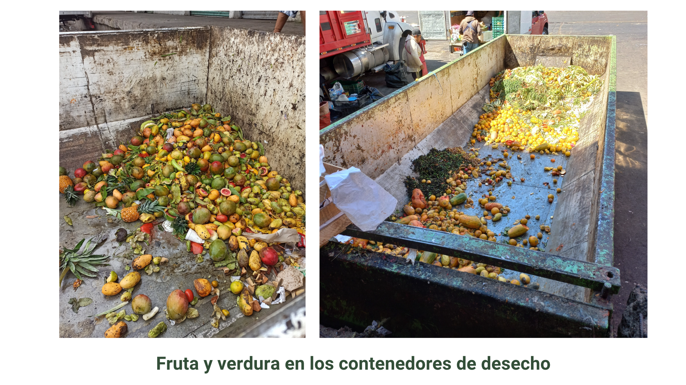

INSIGHTS
Existen 4 actores esenciales en la gestión, distribución y consumo dentro de la Central de Abasto:
• Mayoristas: Venden el producto en grandes cantidades y no tienen mucha variedad
• Minoristas: Venden el producto en pequeñas cantidades y en variedad
• Consumidores: Vendedores de comida internos o personas externas que compran producto en la Central de Abasto
• Diableros: Ayudan al transporte interno de producto

Como resultado de la investigación, se conocieron los patrones y comportamientos de consumo en cuanto al desecho y la percepción del producto en los diferentes tipos de actores mencionados, los cuales son mostrados en la siguiente infografía:

El mayor desperdicio de fruta y verdura se da como resultado de la mala gestión de la misma por parte de los mayoristas, debido a que estos tiran toda la mercancía que les sobra al día en unos contenedores de desecho orgánico en la parte de la zona de carga y descarga dentro de la Central sin importar que todavía sea apta para consumo.

Los diableros como parte de la solución
Aunque los diableros no estén involucrados en el desperdicio de producto, están conscientes de la necesidad de un cambio y de un mejor aprovechamiento de los mismos. Estos trabajadores, los cuales se dedican al transporte de producto interno, fueron tomados en cuenta para la implementación del servicio en la fase final.